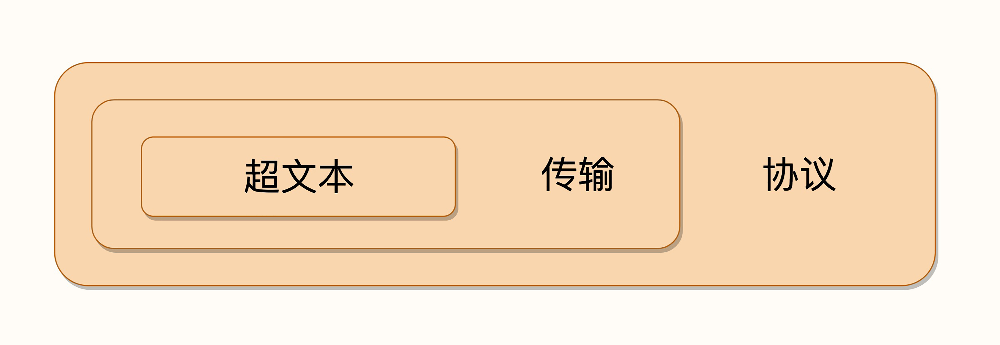
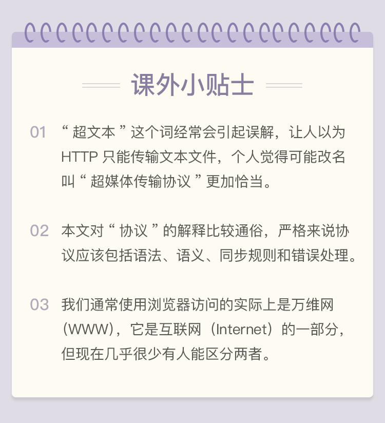

- 00 开篇词｜To Be a HTTP Hero.md.html
- 01 时势与英雄：HTTP的前世今生.md.html
- 02 HTTP是什么？HTTP又不是什么？.md.html
- 03 HTTP世界全览（上）：与HTTP相关的各种概念.md.html
- 04 HTTP世界全览（下）：与HTTP相关的各种协议.md.html
- 05 常说的“四层”和“七层”到底是什么？“五层”“六层”哪去了？.md.html
- 06 域名里有哪些门道？.md.html
- 07 自己动手，搭建HTTP实验环境.md.html
- 08 键入网址再按下回车，后面究竟发生了什么？.md.html
- 09 HTTP报文是什么样子的？.md.html
- 10 应该如何理解请求方法？.md.html
- 11 你能写出正确的网址吗？.md.html
- 12 响应状态码该怎么用？.md.html
- 13 HTTP有哪些特点？.md.html
- 14 HTTP有哪些优点？又有哪些缺点？.md.html
- 15 海纳百川：HTTP的实体数据.md.html
- 16 把大象装进冰箱：HTTP传输大文件的方法.md.html
- 17 排队也要讲效率：HTTP的连接管理.md.html
- 18 四通八达：HTTP的重定向和跳转.md.html
- 19 让我知道你是谁：HTTP的Cookie机制.md.html
- 20 生鲜速递：HTTP的缓存控制.md.html
- 21 良心中间商：HTTP的代理服务.md.html
- 22 冷链周转：HTTP的缓存代理.md.html
- 23 HTTPS是什么？SSLTLS又是什么？.md.html
- 24 固若金汤的根本（上）：对称加密与非对称加密.md.html
- 25 固若金汤的根本（下）：数字签名与证书.md.html
- 26 信任始于握手：TLS1.2连接过程解析.md.html
- 27 更好更快的握手：TLS1.3特性解析.md.html
- 28 连接太慢该怎么办：HTTPS的优化.md.html
- 29 我应该迁移到HTTPS吗？.md.html
- 30 时代之风（上）：HTTP2特性概览.md.html
- 31 时代之风（下）：HTTP2内核剖析.md.html
- 32 未来之路：HTTP3展望.md.html
- 33 我应该迁移到HTTP2吗？.md.html
- 34 Nginx：高性能的Web服务器.md.html
- 35 OpenResty：更灵活的Web服务器.md.html
- 36 WAF：保护我们的网络服务.md.html
- 37 CDN：加速我们的网络服务.md.html
- 38 WebSocket：沙盒里的TCP.md.html
- 39 HTTP性能优化面面观（上）.md.html
- 40 HTTP性能优化面面观（下）.md.html
- 结束语 做兴趣使然的Hero.md.html
02 HTTP是什么？HTTP又不是什么？
首先我来问出这个问题：“你觉得 HTTP 是什么呢？”
你可能会不假思索、脱口而出：“HTTP 就是超文本传输协议，也就是HyperText Transfer Protocol。”
回答非常正确！我必须由衷地恭喜你：能给出这个答案，就表明你具有至少 50%HTTP 相关的知识储备，应该算得上是“半个专家”了。
不过让我们换个对话场景，假设不是我，而是由一位面试官问出刚才的问题呢？

显然，这个答案有点过于简单了，不能让他满意，他肯定会再追问你一些问题：
- 你是怎么理解 HTTP 字面上的“超文本”和“传输协议”的？
- 能否谈一下你对 HTTP 的认识？越多越好。
- HTTP 有什么特点？有什么优点和缺点？
- HTTP 下层都有哪些协议？是如何工作的？
- ……
几乎所有面试时问到的 HTTP 相关问题，都可以从这个最简单的“HTTP 是什么？”引出来。
所以，今天的话题就从这里开始，深度地解答一下“HTTP 是什么？”，以及延伸出来的第二个问题“HTTP 不是什么？”
HTTP 是什么
咱们中国有个成语“人如其名”，意思是一个人的性格和特点是与他的名字相符的。
先看一下 HTTP 的名字：“超文本传输协议”，它可以拆成三个部分，分别是：“超文本”“传输”和“协议”。我们从后往前来逐个解析，理解了这三个词，我们也就明白了什么是 HTTP。

首先，HTTP 是一个协议。不过，协议又是什么呢？
其实“协议”并不仅限于计算机世界，现实生活中也随处可见。例如，你在刚毕业时会签一个“三方协议”，找房子时会签一个“租房协议”，公司入职时还可能会签一个“保密协议”，工作中使用的各种软件也都带着各自的“许可协议”。
刚才说的这几个都是“协议”，本质上与 HTTP 是相同的，那么“协议”有什么特点呢？
第一点，协议必须要有两个或多个参与者，也就是“协”。
如果只有你一个人，那你自然可以想干什么就干什么，想怎么玩就怎么玩，不会干涉其他人，其他人也不会干涉你，也就不需要所谓的“协议”。但是，一旦有了两个以上的参与者出现，为了保证最基本的顺畅交流，协议就自然而然地出现了。
例如，为了保证你顺利就业，“三方协议”里的参与者有三个：你、公司和学校；为了保证你顺利入住，“租房协议”里的参与者有两个：你和房东。
第二点，协议是对参与者的一种行为约定和规范，也就是“议”。
协议意味着有多个参与者为了达成某个共同的目的而站在了一起，除了要无疑义地沟通交流之外，还必须明确地规定各方的“责、权、利”，约定该做什么不该做什么，先做什么后做什么，做错了怎么办，有没有补救措施等等。例如，“租房协议”里就约定了，租期多少个月，每月租金多少，押金是多少，水电费谁来付，违约应如何处理等等。
好，到这里，你应该能够明白 HTTP 的第一层含义了。
HTTP 是一个用在计算机世界里的协议。它使用计算机能够理解的语言确立了一种计算机之间交流通信的规范，以及相关的各种控制和错误处理方式。
接下来我们看 HTTP 字面里的第二部分：“传输”。
计算机和网络世界里有数不清的各种角色：CPU、内存、总线、磁盘、操作系统、浏览器、网关、服务器……这些角色之间相互通信也必然会有各式各样、五花八门的协议，用处也各不相同，例如广播协议、寻址协议、路由协议、隧道协议、选举协议等等。
HTTP 是一个“传输协议”，所谓的“传输”（Transfer）其实很好理解，就是把一堆东西从 A 点搬到 B 点，或者从 B 点搬到 A 点，即“A<===>B”。
别小看了这个简单的动作，它也至少包含了两项重要的信息。
第一点，HTTP 协议是一个“双向协议”。
也就是说，有两个最基本的参与者 A 和 B，从 A 开始到 B 结束，数据在 A 和 B 之间双向而不是单向流动。通常我们把先发起传输动作的 A 叫做请求方，把后接到传输的 B 叫做应答方或者响应方。拿我们最常见的上网冲浪来举例子，浏览器就是请求方 A，网易、新浪这些网站就是应答方 B。双方约定用 HTTP 协议来通信，于是浏览器把一些数据发送给网站，网站再把一些数据发回给浏览器，最后展现在屏幕上，你就可以看到各种有意思的新闻、视频了。
第二点，数据虽然是在 A 和 B 之间传输，但并没有限制只有 A 和 B 这两个角色，允许中间有“中转”或者“接力”。
这样，传输方式就从“A<===>B”，变成了“A<=>X<=>Y<=>Z<=>B”，A 到 B 的传输过程中可以存在任意多个“中间人”，而这些中间人也都遵从 HTTP 协议，只要不打扰基本的数据传输，就可以添加任意的额外功能，例如安全认证、数据压缩、编码转换等等，优化整个传输过程。
说到这里，你差不多应该能够明白 HTTP 的第二层含义了。
HTTP 是一个在计算机世界里专门用来在两点之间传输数据的约定和规范。
讲完了“协议”和“传输”，现在，我们终于到 HTTP 字面里的第三部分：“超文本”。
既然 HTTP 是一个“传输协议”，那么它传输的“超文本”到底是什么呢？我还是用两点来进一步解释。
所谓“文本”（Text），就表示 HTTP 传输的不是 TCP/UDP 这些底层协议里被切分的杂乱无章的二进制包（datagram），而是完整的、有意义的数据，可以被浏览器、服务器这样的上层应用程序处理。
在互联网早期，“文本”只是简单的字符文字，但发展到现在，“文本”的涵义已经被大大地扩展了，图片、音频、视频、甚至是压缩包，在 HTTP 眼里都可以算做是“文本”。
所谓“超文本”，就是“超越了普通文本的文本”，它是文字、图片、音频和视频等的混合体，最关键的是含有“超链接”，能够从一个“超文本”跳跃到另一个“超文本”，形成复杂的非线性、网状的结构关系。
对于“超文本”，我们最熟悉的就应该是 HTML 了，它本身只是纯文字文件，但内部用很多标签定义了对图片、音频、视频等的链接，再经过浏览器的解释，呈现在我们面前的就是一个含有多种视听信息的页面。
OK，经过了对 HTTP 里这三个名词的详细解释，下次当你再面对面试官时，就可以给出比“超文本传输协议”这七个字更准确更有技术含量的答案：“HTTP 是一个在计算机世界里专门在两点之间传输文字、图片、音频、视频等超文本数据的约定和规范”。
HTTP 不是什么
现在你对“HTTP 是什么？”应该有了比较清晰的认识，紧接着的问题就是“HTTP 不是什么？”，等价的问题是“HTTP 不能干什么？”。想想看，你能回答出来吗？
因为 HTTP 是一个协议，是一种计算机间通信的规范，所以它不存在“单独的实体”。它不是浏览器、手机 APP 那样的应用程序，也不是 Windows、Linux 那样的操作系统，更不是 Apache、Nginx、Tomcat 那样的 Web 服务器。
但 HTTP 又与应用程序、操作系统、Web 服务器密切相关，在它们之间的通信过程中存在，而且是一种“动态的存在”，是发生在网络连接、传输超文本数据时的一个“动态过程”。
HTTP 不是互联网。
互联网（Internet）是遍布于全球的许多网络互相连接而形成的一个巨大的国际网络，在它上面存放着各式各样的资源，也对应着各式各样的协议，例如超文本资源使用 HTTP，普通文件使用 FTP，电子邮件使用 SMTP 和 POP3 等。
但毫无疑问，HTTP 是构建互联网的一块重要拼图，而且是占比最大的那一块。
HTTP 不是编程语言。
编程语言是人与计算机沟通交流所使用的语言，而 HTTP 是计算机与计算机沟通交流的语言，我们无法使用 HTTP 来编程，但可以反过来，用编程语言去实现 HTTP，告诉计算机如何用 HTTP 来与外界通信。
很多流行的编程语言都支持编写 HTTP 相关的服务或应用，例如使用 Java 在 Tomcat 里编写 Web 服务，使用 PHP 在后端实现页面模板渲染，使用 JavaScript 在前端实现动态页面更新，你是否也会其中的一两种呢？
HTTP 不是 HTML，这个可能要特别强调一下，千万不要把 HTTP 与 HTML 混为一谈，虽然这两者经常是同时出现。
HTML 是超文本的载体，是一种标记语言，使用各种标签描述文字、图片、超链接等资源，并且可以嵌入 CSS、JavaScript 等技术实现复杂的动态效果。单论次数，在互联网上 HTTP 传输最多的可能就是 HTML，但要是论数据量，HTML 可能要往后排了，图片、音频、视频这些类型的资源显然更大。
HTTP 不是一个孤立的协议。
俗话说“一个好汉三个帮”，HTTP 也是如此。
在互联网世界里，HTTP 通常跑在 TCP/IP 协议栈之上，依靠 IP 协议实现寻址和路由、TCP 协议实现可靠数据传输、DNS 协议实现域名查找、SSL/TLS 协议实现安全通信。此外，还有一些协议依赖于 HTTP，例如 WebSocket、HTTPDNS 等。这些协议相互交织，构成了一个协议网，而 HTTP 则处于中心地位。
小结
- HTTP 是一个用在计算机世界里的协议，它确立了一种计算机之间交流通信的规范，以及相关的各种控制和错误处理方式。
- HTTP 专门用来在两点之间传输数据，不能用于广播、寻址或路由。
- HTTP 传输的是文字、图片、音频、视频等超文本数据。
- HTTP 是构建互联网的重要基础技术，它没有实体，依赖许多其他的技术来实现，但同时许多技术也都依赖于它。
把这些综合起来，使用递归缩写方式（模仿 PHP），我们可以把 HTTP 定义为“与 HTTP 协议相关的所有应用层技术的总和”。
这里我画了一个思维导图，也可以算是这个专栏系列文章的“知识地图”。

你可以对照这张图，看一下哪些部分是自己熟悉的，哪些部分是陌生的，又有哪些部分是想要进一步了解的，下一讲我会详细讲解这张图。
课下作业
- 有一种流行的说法：“HTTP 是用于从互联网服务器传输超文本到本地浏览器的协议”，你认为这种说法对吗？对在哪里，又错在哪里？
- 你能再说出几个“HTTP 不是什么”吗？
欢迎你通过留言分享答案，与我和其他同学一起讨论。如果你觉得有所收获，欢迎你把文章分享给你的朋友。
